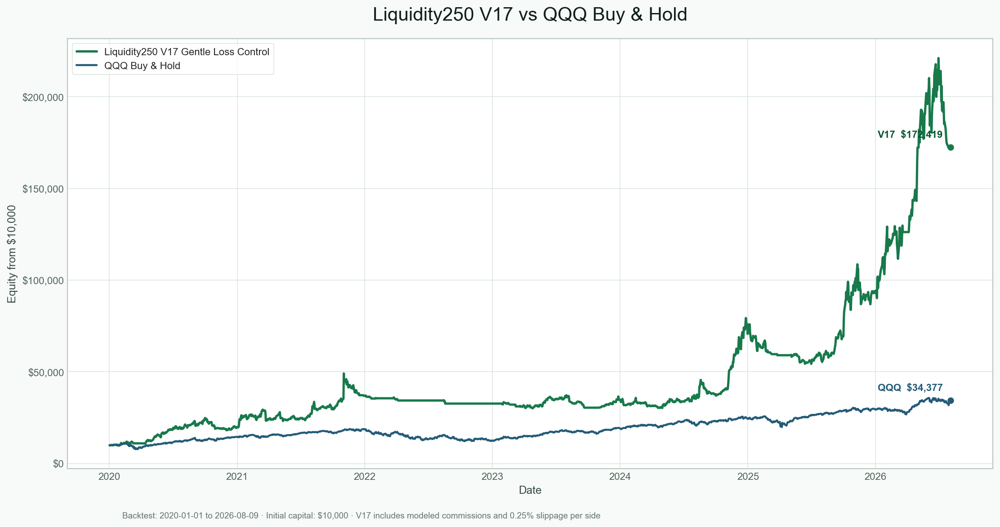

策略本身在做什么
V17 是一个美股横截面动量与相对强弱策略。它不是预测单只股票的短期涨跌，而是从流动性股票池中寻找当前最强的一组股票，在市场大环境允许时集中持有前五名，并让少数大趋势贡献长期收益。
- 股票池：每月从 Broad Discovery 候选中筛选约 250 只可投资、流动性较好的股票。
- 市场过滤：只有 QQQ 位于 200 日均线上方时才允许持有或开仓。
- 排名信号：使用 20 日动量与相对 QQQ 的 84 日相对强弱，按 40% / 60% 合成分数。
- 持仓：选择排名前五，目标权重依次为 27%、23%、20%、17%、13%。
- 执行：使用当日收盘形成信号，下一交易日开盘成交；回测加入每边 0.25% 滑点和 IBKR Fixed 风格佣金。
退出与亏损控制
- 固定 10% 硬止损。
- 持仓前 5 日内，如果跌幅达到 6%、最大浮盈不足 3%，判定为 early failure。
- 止损或 early failure 后，同一股票暂停 10 个交易日再入场。
- 两次失败集中出现后，短期限制补仓速度和入场排名。
- 10 个交易日内出现 3 笔亏损时，新仓缩小至 60%；15 日内出现 5 笔亏损时暂停新开仓 5 日。
- 浮盈达到 8% 后启用 ATR14 × 3 的 Chandelier 保护；跟踪距离限制在 7% 至 16%。浮盈达到 10% 后设置接近保本的利润底线，达到 25% / 50% 后分别锁定 8% / 20%。
这些控制主要在损失已经发生后才启动，能够降低后续暴露，却无法保护第一批同时买入的高相关仓位。
长期历史回测

| 指标 | 结果 |
|---|---|
| 期间 | 2020-01-01 至 2026-08-09 |
| 初始 / 最终资金 | $10,000 / $172,418.59 |
| 总回报 / CAGR | +1,624.19% / 54.07% |
| 最大回撤 | -38.72% |
| Sharpe / Sortino | 1.28 / 1.75 |
| 交易数 / 胜率 | 360 / 36.39% |
| 平均交易收益 / Profit Factor | +5.00% / 2.13 |
| 滑点 / 佣金 | $14,424.64 / $958.74 |
长期结果说明策略过去能够依靠少数大赢家覆盖大量小亏损，胜率并不高。不过，高复利不能消除 -38.72% 的历史回撤，也不能证明未来仍有相同的趋势机会。
近期失效：16 笔交易
| 指标 | V17 近期结果 |
|---|---|
| 期间 | 2026-06-01 至实际数据结束 2026-08-04 |
| 最终资金 / 总回报 | $7,897.19 / -21.03% |
| 最大回撤 | -23.38% |
| 交易数 / 胜率 | 16 / 12.50% |
| 平均交易收益 | -7.25% |
| Profit Factor | 0.03 |
| 平均持仓数 / 平均资金投入 | 1.53 / 27.36% |
| 滑点 / 佣金 | $135.71 / $32.00 |
亏损为什么这么集中
6 月 2 日的五笔新仓共亏损 $880.25；6 月 26 日的五笔新仓共亏损 $767.05。两批合计亏损 $1,647.31，占 16 笔净亏损的 78.86%。亏损不是随机散布，而是集中在两次整篮子建仓。
第二批包含 MU、SNDK、AMAT、LRCX、MKSI，几乎全部属于半导体、存储或半导体设备链。表面上持有五只股票，实际承担的是一个高度相关的行业反转风险。
退出结果说明什么
| 退出原因 | 笔数 | 胜率 | 合计 PnL | 平均收益 |
|---|---|---|---|---|
| 硬止损 | 4 | 0% | -$1,037.57 | -12.58% |
| Early failure | 5 | 0% | -$725.39 | -8.95% |
| 动量退出 | 2 | 0% | -$169.29 | -4.78% |
| Winner protection | 5 | 40% | -$156.57 | -2.27% |
日线收盘触发、下一交易日开盘退出，使名义 6% early failure 的实际平均亏损达到 8.95%，名义 10% 硬止损的实际平均亏损达到 12.58%。隔夜跳空时，止损价格不是保证成交价格。
另外，五笔 winner protection 交易曾平均浮盈 12.37%，最终合计仍亏损 $156.57。AMAT、LRCX、MKSI 都从约 12% 浮盈回落至亏损，说明当前保护无法可靠锁住日内或隔夜跳空前的浮盈。
为什么现在不建议实盘
- 近期样本明确失效：16 笔只有两笔盈利，Profit Factor 仅 0.03，不是正常的小幅波动。
- 行业风险未被模型识别：五个股票仓位可能来自同一产业链，实际分散程度远低于持仓数量。
- 风控是事后型：缩仓、暂停和冷却需要先发生亏损；第一次整篮子错误入场仍可造成大幅损失。
- 日线回测不能保证止损成交：隔夜跳空会穿越 6% 或 10% 的止损线，真实成交可能更差。
- 长期结果存在数据限制：Broad Discovery 历史档案从 2026-07-19 才开始，之前的股票池使用当前存续股票回填，存在幸存者偏差风险。
- 改进尚未稳定：行业最多两只虽然把近期亏损改善至 -8.50%，却把长期回报从 +1,624.19% 降至 +1,181.17%；分批建仓和提前锁盈的长期表现更差。
- 缺少真正前瞻证据：高历史回报仍属于回测结果，尚不足以替代冻结规则后的样本外、模拟盘和真实成交验证。
研究决定
保留 V17 作为研究基准，不直接投入实盘，也不根据这 16 笔交易继续微调止损。下一步只验证更温和的行业总权重限制，并要求冻结规则后的样本外和模拟盘证据。
可以从这个策略学到什么
- 低胜率并不必然代表坏策略，但必须持续保留少数大赢家；过早锁盈会破坏趋势策略的右尾收益。
- 持有五只股票不等于真正分散，行业与因子相关性比股票数量更重要。
- 历史复利很高的策略，仍可能在两个月内亏损超过 20%。
- 名义止损和真实成交之间存在跳空缺口，日线回测尤其容易低估这一风险。
- 近期改进若不能同时通过长期与样本外验证，只能视为针对已知亏损的拟合。